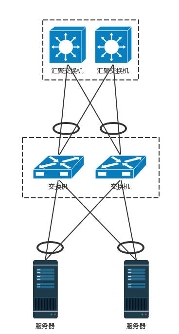
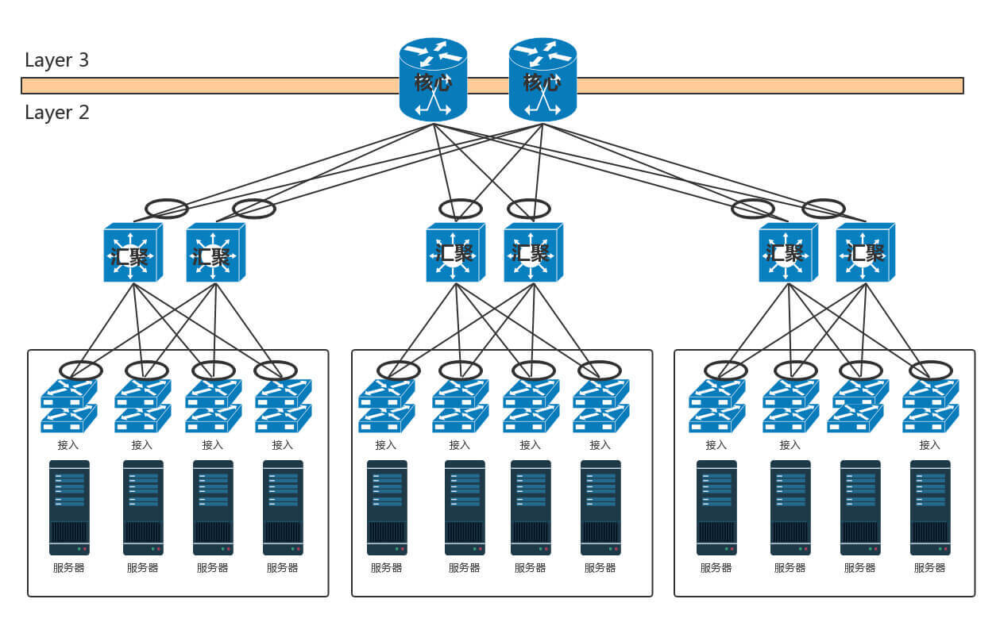
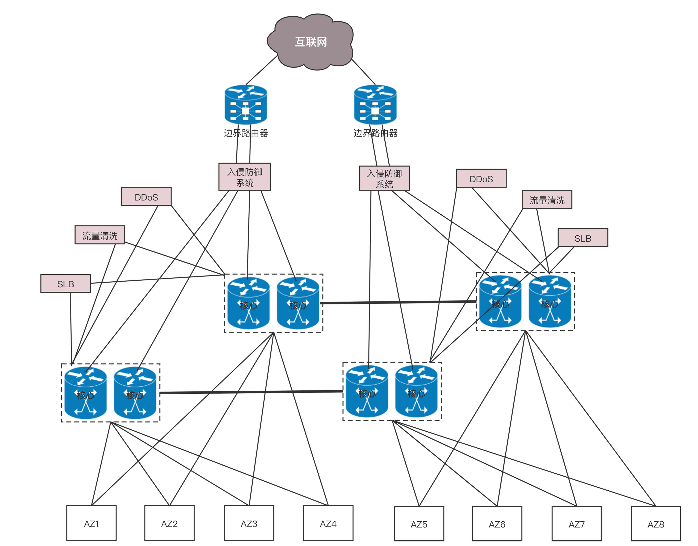

- 00 开篇词 想成为技术牛人？先搞定网络协议！.md
- 01 为什么要学习网络协议？.md
- 02 网络分层的真实含义是什么？.md
- 03 ifconfig：最熟悉又陌生的命令行.md
- 04 DHCP与PXE：IP是怎么来的，又是怎么没的？.md
- 05 从物理层到MAC层：如何在宿舍里自己组网玩联机游戏？.md
- 06 交换机与VLAN：办公室太复杂，我要回学校.md
- 07 ICMP与ping：投石问路的侦察兵.md
- 08 世界这么大，我想出网关：欧洲十国游与玄奘西行.md
- 09 路由协议：西出网关无故人，敢问路在何方.md
- 10 UDP协议：因性善而简单，难免碰到“城会玩”.md
- 11 TCP协议（上）：因性恶而复杂，先恶后善反轻松.md
- 12 TCP协议（下）：西行必定多妖孽，恒心智慧消磨难.md
- 13 套接字Socket：Talk is cheap, show me the code.md
- 14 HTTP协议：看个新闻原来这么麻烦.md
- 15 HTTPS协议：点外卖的过程原来这么复杂.md
- 16 流媒体协议：如何在直播里看到美女帅哥？.md
- 17 P2P协议：我下小电影，99%急死你.md
- 18 DNS协议：网络世界的地址簿.md
- 19 HttpDNS：网络世界的地址簿也会指错路.md
- 20 CDN：你去小卖部取过快递么？.md
- 21 数据中心：我是开发商，自己拿地盖别墅.md
- 22 VPN：朝中有人好做官.md
- 23 移动网络：去巴塞罗那，手机也上不了脸书.md
- 24 云中网络：自己拿地成本高，购买公寓更灵活.md
- 25 软件定义网络：共享基础设施的小区物业管理办法.md
- 26 云中的网络安全：虽然不是土豪，也需要基本安全和保障.md
- 27 云中的网络QoS：邻居疯狂下电影，我该怎么办？.md
- 28 云中网络的隔离GRE、VXLAN：虽然住一个小区，也要保护隐私.md
- 29 容器网络：来去自由的日子，不买公寓去合租.md
- 30 容器网络之Flannel：每人一亩三分地.md
- 31 容器网络之Calico：为高效说出善意的谎言.md
- 32 RPC协议综述：远在天边，近在眼前.md
- 33 基于XML的SOAP协议：不要说NBA，请说美国职业篮球联赛.md
- 34 基于JSON的RESTful接口协议：我不关心过程，请给我结果.md
- 35 二进制类RPC协议：还是叫NBA吧，总说全称多费劲.md
- 36 跨语言类RPC协议：交流之前，双方先来个专业术语表.md
- 37 知识串：用双十一的故事串起碎片的网络协议（上）.md
- 38 知识串：用双十一的故事串起碎片的网络协议（中）.md
- 39 知识串：用双十一的故事串起碎片的网络协议（下）.md
- 40 搭建一个网络实验环境：授人以鱼不如授人以渔.md
- 加餐1 创作故事：我是如何创作“趣谈网络协议”专栏的？.md
- 协议专栏特别福利 答疑解惑1期.md
- 协议专栏特别福利 答疑解惑2期.md
- 协议专栏特别福利 答疑解惑3期.md
- 协议专栏特别福利 答疑解惑4期.md
- 协议专栏特别福利 答疑解惑5期.md
- 结束语 放弃完美主义，执行力就是限时限量认真完成.md
21 数据中心：我是开发商，自己拿地盖别墅
无论你是看新闻、下订单、看视频、下载文件，最终访问的目的地都在数据中心里面。我们前面学了这么多的网络协议和网络相关的知识，你是不是很好奇，数据中心究竟长啥样呢？
数据中心是一个大杂烩，几乎要用到前面学过的所有知识。
前面讲办公室网络的时候，我们知道办公室里面有很多台电脑。如果要访问外网，需要经过一个叫网关的东西，而网关往往是一个路由器。
数据中心里面也有一大堆的电脑，但是它和咱们办公室里面的笔记本或者台式机不一样。数据中心里面是服务器。服务器被放在一个个叫作机架（Rack）的架子上面。
数据中心的入口和出口也是路由器，由于在数据中心的边界，就像在一个国家的边境，称为边界路由器（Border Router）。为了高可用，边界路由器会有多个。
一般家里只会连接一个运营商的网络，而为了高可用，为了当一个运营商出问题的时候，还可以通过另外一个运营商来提供服务，所以数据中心的边界路由器会连接多个运营商网络。
既然是路由器，就需要跑路由协议，数据中心往往就是路由协议中的自治区域（AS）。数据中心里面的机器要想访问外面的网站，数据中心里面也是有对外提供服务的机器，都可以通过BGP协议，获取内外互通的路由信息。这就是我们常听到的多线BGP的概念。
如果数据中心非常简单，没几台机器，那就像家里或者宿舍一样，所有的服务器都直接连到路由器上就可以了。但是数据中心里面往往有非常多的机器，当塞满一机架的时候，需要有交换机将这些服务器连接起来，可以互相通信。
这些交换机往往是放在机架顶端的，所以经常称为TOR（Top Of Rack）交换机。这一层的交换机常常称为接入层（Access Layer）。注意这个接入层和原来讲过的应用的接入层不是一个概念。
当一个机架放不下的时候，就需要多个机架，还需要有交换机将多个机架连接在一起。这些交换机对性能的要求更高，带宽也更大。这些交换机称为汇聚层交换机（Aggregation Layer）。
数据中心里面的每一个连接都是需要考虑高可用的。这里首先要考虑的是，如果一台机器只有一个网卡，上面连着一个网线，接入到TOR交换机上。如果网卡坏了，或者不小心网线掉了，机器就上不去了。所以，需要至少两个网卡、两个网线插到TOR交换机上，但是两个网卡要工作得像一张网卡一样，这就是常说的网卡绑定（bond）。
这就需要服务器和交换机都支持一种协议LACP（Link Aggregation Control Protocol）。它们互相通信，将多个网卡聚合称为一个网卡，多个网线聚合成一个网线，在网线之间可以进行负载均衡，也可以为了高可用作准备。
网卡有了高可用保证，但交换机还有问题。如果一个机架只有一个交换机，它挂了，那整个机架都不能上网了。因而TOR交换机也需要高可用，同理接入层和汇聚层的连接也需要高可用性，也不能单线连着。
最传统的方法是，部署两个接入交换机、两个汇聚交换机。服务器和两个接入交换机都连接，接入交换机和两个汇聚都连接，当然这样会形成环，所以需要启用STP协议，去除环，但是这样两个汇聚就只能一主一备了。STP协议里我们学过，只有一条路会起作用。
交换机有一种技术叫作堆叠，所以另一种方法是，将多个交换机形成一个逻辑的交换机，服务器通过多根线分配连到多个接入层交换机上，而接入层交换机多根线分别连接到多个交换机上，并且通过堆叠的私有协议，形成双活的连接方式。

由于对带宽要求更大，而且挂了影响也更大，所以两个堆叠可能就不够了，可以就会有更多的，比如四个堆叠为一个逻辑的交换机。
汇聚层将大量的计算节点相互连接在一起，形成一个集群。在这个集群里面，服务器之间通过二层互通，这个区域常称为一个POD（Point Of Delivery），有时候也称为一个可用区（Available Zone）。
当节点数目再多的时候，一个可用区放不下，需要将多个可用区连在一起，连接多个可用区的交换机称为核心交换机。

核心交换机吞吐量更大，高可用要求更高，肯定需要堆叠，但是往往仅仅堆叠，不足以满足吞吐量，因而还是需要部署多组核心交换机。核心和汇聚交换机之间为了高可用，也是全互连模式的。
这个时候还存在一个问题，出现环路怎么办？
一种方式是，不同的可用区在不同的二层网络，需要分配不同的网段。汇聚和核心之间通过三层网络互通的，二层都不在一个广播域里面，不会存在二层环路的问题。三层有环是没有问题的，只要通过路由协议选择最佳的路径就可以了。那为啥二层不能有环路，而三层可以呢？你可以回忆一下二层环路的情况。

如图，核心层和汇聚层之间通过内部的路由协议OSPF，找到最佳的路径进行访问，而且还可以通过ECMP等价路由，在多个路径之间进行负载均衡和高可用。
但是随着数据中心里面的机器越来越多，尤其是有了云计算、大数据，集群规模非常大，而且都要求在一个二层网络里面。这就需要二层互连从汇聚层上升为核心层，也即在核心以下，全部是二层互连，全部在一个广播域里面，这就是常说的大二层。

如果大二层横向流量不大，核心交换机数目不多，可以做堆叠，但是如果横向流量很大，仅仅堆叠满足不了，就需要部署多组核心交换机，而且要和汇聚层进行全互连。由于堆叠只解决一个核心交换机组内的无环问题，而组之间全互连，还需要其他机制进行解决。
如果是STP，那部署多组核心无法扩大横向流量的能力，因为还是只有一组起作用。
于是大二层就引入了TRILL（Transparent Interconnection of Lots of Link），即多链接透明互联协议。它的基本思想是，二层环有问题，三层环没有问题，那就把三层的路由能力模拟在二层实现。
运行TRILL协议的交换机称为RBridge，是具有路由转发特性的网桥设备，只不过这个路由是根据MAC地址来的，不是根据IP来的。
Rbridage之间通过链路状态协议运作。记得这个路由协议吗？通过它可以学习整个大二层的拓扑，知道访问哪个MAC应该从哪个网桥走；还可以计算最短的路径，也可以通过等价的路由进行负载均衡和高可用性。
TRILL协议在原来的MAC头外面加上自己的头，以及外层的MAC头。TRILL头里面的Ingress RBridge，有点像IP头里面的源IP地址，Egress RBridge是目标IP地址，这两个地址是端到端的，在中间路由的时候，不会发生改变。而外层的MAC，可以有下一跳的Bridge，就像路由的下一跳，也是通过MAC地址来呈现的一样。
如图中所示的过程，有一个包要从主机A发送到主机B，中间要经过RBridge 1、RBridge 2、RBridge X等等，直到RBridge 3。在RBridge 2收到的包里面，分内外两层，内层就是传统的主机A和主机B的MAC地址以及内层的VLAN。
在外层首先加上一个TRILL头，里面描述这个包从RBridge 1进来的，要从RBridge 3出去，并且像三层的IP地址一样有跳数。然后再外面，目的MAC是RBridge 2，源MAC是RBridge 1，以及外层的VLAN。
当RBridge 2收到这个包之后，首先看MAC是否是自己的MAC，如果是，要看自己是不是Egress RBridge，也即是不是最后一跳；如果不是，查看跳数是不是大于0，然后通过类似路由查找的方式找到下一跳RBridge X，然后将包发出去。
RBridge 2发出去的包，内层的信息是不变的，外层的TRILL头里面。同样，描述这个包从RBridge 1进来的，要从RBridge 3出去，但是跳数要减1。外层的目标MAC变成RBridge X，源MAC变成RBridge 2。
如此一直转发，直到RBridge 3，将外层解出来，发送内层的包给主机B。
这个过程是不是和IP路由很像？
对于大二层的广播包，也需要通过分发树的技术来实现。我们知道STP是将一个有环的图，通过去掉边形成一棵树，而分发树是一个有环的图形成多棵树，不同的树有不同的VLAN，有的广播包从VLAN A广播，有的从VLAN B广播，实现负载均衡和高可用。
核心交换机之外，就是边界路由器了。至此从服务器到数据中心边界的层次情况已经清楚了。
在核心交换上面，往往会挂一些安全设备，例如入侵检测、DDoS防护等等。这是整个数据中心的屏障，防止来自外来的攻击。核心交换机上往往还有负载均衡器，原理前面的章节已经说过了。
在有的数据中心里面，对于存储设备，还会有一个存储网络，用来连接SAN和NAS。但是对于新的云计算来讲，往往不使用传统的SAN和NAS，而使用部署在x86机器上的软件定义存储，这样存储也是服务器了，而且可以和计算节点融合在一个机架上，从而更加有效率，也就没有了单独的存储网络了。
于是整个数据中心的网络如下图所示。

这是一个典型的三层网络结构。这里的三层不是指IP层，而是指接入层、汇聚层、核心层三层。这种模式非常有利于外部流量请求到内部应用。这个类型的流量，是从外到内或者从内到外，对应到上面那张图里，就是从上到下，从下到上，上北下南，所以称为南北流量。
但是随着云计算和大数据的发展，节点之间的交互越来越多，例如大数据计算经常要在不同的节点将数据拷贝来拷贝去，这样需要经过交换机，使得数据从左到右，从右到左，左西右东，所以称为东西流量。
为了解决东西流量的问题，演进出了叶脊网络（Spine/Leaf）。
-
叶子交换机（leaf），直接连接物理服务器。L2/L3网络的分界点在叶子交换机上，叶子交换机之上是三层网络。
-
脊交换机（spine switch），相当于核心交换机。叶脊之间通过ECMP动态选择多条路径。脊交换机现在只是为叶子交换机提供一个弹性的L3路由网络。南北流量可以不用直接从脊交换机发出，而是通过与leaf交换机并行的交换机，再接到边界路由器出去。
传统的三层网络架构是垂直的结构，而叶脊网络架构是扁平的结构，更易于水平扩展。
小结
好了，复杂的数据中心就讲到这里了。我们来总结一下，你需要记住这三个重点。
-
数据中心分为三层。服务器连接到接入层，然后是汇聚层，再然后是核心层，最外面是边界路由器和安全设备。
-
数据中心的所有链路都需要高可用性。服务器需要绑定网卡，交换机需要堆叠，三层设备可以通过等价路由，二层设备可以通过TRILL协议。
-
随着云和大数据的发展，东西流量相对于南北流量越来越重要，因而演化为叶脊网络结构。
最后，给你留两个思考题：
-
对于数据中心来讲，高可用是非常重要的，每个设备都要考虑高可用，那跨机房的高可用，你知道应该怎么做吗？
-
前面说的浏览新闻、购物、下载、看视频等行为，都是普通用户通过公网访问数据中心里面的资源。那IT管理员应该通过什么样的方式访问数据中心呢？
我们的专栏更新到第21讲，不知你掌握得如何？每节课后我留的思考题，你都有没有认真思考，并在留言区写下答案呢？我会从已发布的文章中选出一批认真留言的同学，赠送学习奖励礼券和我整理的独家网络协议知识图谱。
欢迎你留言和我讨论。趣谈网络协议，我们下期见！
© 2019 - 2023 Liangliang Lee. Powered by Vert.x and hexo-theme-book.